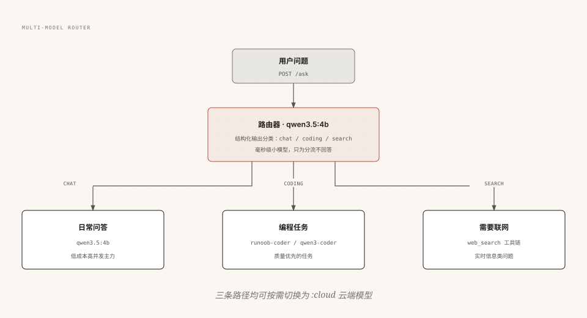

Ollama マルチモデル連携と Agent ワークフロー
単一モデルですべてをこなす必要はない：小モデルに振り分けをさせ、専門モデルにタスクを処理させ、ネットワーク接続モデルに情報検索をさせ、構造化出力をスケジューリングプロトコルとして使えば、高速かつ低コストなスマートアプリケーションを組み合わせられる。
この章ではマルチモデルルーティングシステムを実装し、それをネットワーク接続機能付きの Agent ワークフローにアップグレードする。
アーキテクチャ設計：小モデルルーティング + 専門家実行
核となる考え方は分業である：「ユーザーが何をしたいか」を判断するのは簡単なので、最小のモデルで十分；実際の作業は対応する専門モデルに任せる。

この設計には3つの利点がある：小モデルのルーティングは数十ミリ秒で済み、大モデルが低価値なリクエストを処理する必要がなくなる；各専門モデルのパラメータは必要に応じて独立して調整できる；新しいタスクタイプは分岐を1つ追加するだけでよく、既存のチェーンに影響を与えない。
実装1：構造化出力による意図ルーティング
ルーティングの鍵は分類結果を「機械可読」にすることであり、構造化出力がここでスケジューリングプロトコルの役割を果たす。
例
from ollama import chat
from pydantic import BaseModel, Field
# ルーティング結果の構造化定義
class Route(BaseModel):
category: str = Field(description=問題カテゴリ：chat / coding / search)
reason: str = Field(description=一言での分類根拠)
def classify(question: str) -> Route:
response = chat(
model='qwen3.5:4b', # ルーティングは小モデルで十分
messages=[{'role': 'user', 'content': question}],
format=Route.model_json_schema(),
options={'temperature': 0}, # 分類は安定している必要がある
)
return Route.model_validate_json(response.message.content)
# クイックセルフテスト
for q in ['Python リストの重複はどうやって除去する？', '今日の AI ニュースは？', 'ジョークを言って']:
r = classify(q)
print(r.category, '|', r.reason)
$ python router.py coding | 询问 Python 列表去重的编程方法 search | 询问当天的最新新闻，需要联网 chat | 闲聊类请求，直接回答即可
実装2：3つの専門家プロセッサ
各パスに1つのプロセッサ関数を用意し、シグネチャを統一してスケジューリングを容易にする。
例
from ollama import chat, web_search, web_fetch
def handle_chat(question):
"""日常のQ&A：小モデルが直接回答"""
r = chat(model='qwen3.5:4b',
messages=[{'role': 'user', 'content': question}])
return r.message.content
def handle_coding(question):
"""プログラミングタスク：専用コードモデルに任せる"""
r = chat(model='runoob-coder',
messages=[{'role': 'user', 'content': question}],
options={'temperature': 0.2, 'num_ctx': 65536})
return r.message.content
def handle_search(question):
"""ネットワーク接続タスク：小モデル + 検索ツールの Agent ループ"""
tools = {'web_search': web_search, 'web_fetch': web_fetch}
messages = [{'role': 'user', 'content': question}]
while True:
r = chat(model='qwen3.5:4b', messages=messages,
tools=[web_search, web_fetch])
messages.append(r.message)
if not r.message.tool_calls:
return r.message.content
for call in r.message.tool_calls:
func = tools.get(call.function.name)
# ツール結果を切り詰めて、コンテキストウィンドウを保護
result = str(func(**call.function.arguments))[:2000]
messages.append({'role': 'tool',
'tool_name': call.function.name,
'content': result})
HANDLERS = {'chat': handle_chat,
'coding': handle_coding,
'search': handle_search}
def ask(question):
route = classify(question)
print(f'[ルート -> {route.category}] {route.reason}')
return HANDLERS[route.category](question)
ルーター自体は回答を生成しないため、その幻覚リスクは「分類の誤り」という1つのことに限定される；誤分類のコストは修正をもう1回行うだけで、最終的な回答を汚染することはない。
実装3：ローカルと Cloud のハイブリッドオーケストレーション
各パスに「クラウドアップグレードオプション」を追加できる：ローカルモデルで処理できないタスクは、同じコード構造でモデル名を変えるだけでよい。
例
def ask_with_fallback(question, force_cloud=False):
"""クラウドフォールバック付きスケジューリング：ローカル優先、複雑なタスクはクラウドにアップグレード"""
route = classify(question).category
if force_cloud or route == 'coding':
# コーディングなどの高負荷タスクは直接クラウドの最上位仕様を使用
model = 'qwen3.5:cloud'
else:
model = 'qwen3.5:4b'
print(f'[ルート -> {route}] 使用モデル {model}')
r = chat(model=model,
messages=[{'role': 'user', 'content': question}])
return r.message.content
1つの能力差に注意：Cloud モデルは現時点で構造化出力をサポートしていないため、ルーターはローカルモデルが担当する必要がある。これは「小モデルがルーティングを行う」という設計にもちょうど合致する。
コストと遅延の総合評価
マルチモデル戦略の収支は3つの次元でまとめて計算する必要がある：
| 次元 | ローカル小モデル | ローカル大モデル | クラウドモデル |
|---|---|---|---|
| 初回トークン遅延 | 最低（ミリ秒単位のロード） | 中程度 | ネットワーク往復を含む |
| 限界コスト | 電気代にほぼ等しい | 電気代 + VRAM 占有 | 使用量に応じた課金 |
| 回答品質 | 簡単なタスクには十分 | 最上位に近い | 最上位クラス |
| 並行処理能力 | ローカルマシンの制限を受ける | VRAM の制限を受ける | 最も柔軟 |
これにより実用的なベースライン戦略が得られる：ルーターと軽量タスクはローカル小モデルを基本とする；品質に敏感なタスクはローカル大モデルに任せる；高負荷または超仕様のタスクはクラウドに切り替える；3種類のモデル名はすべて設定ファイルで管理し、廃止予告やハードウェアの変更に応じて随時調整する。
その他の拡張
クリックしてノートを共有
ノートは本記事の内容の拡張である必要があります！
記事の投稿はこちらから
登録招待コードの取得方法
ノートを共有する前にログインが必要です！
登録招待コードの取得方法